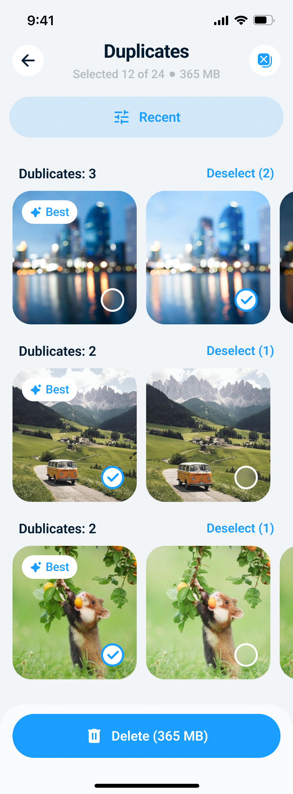
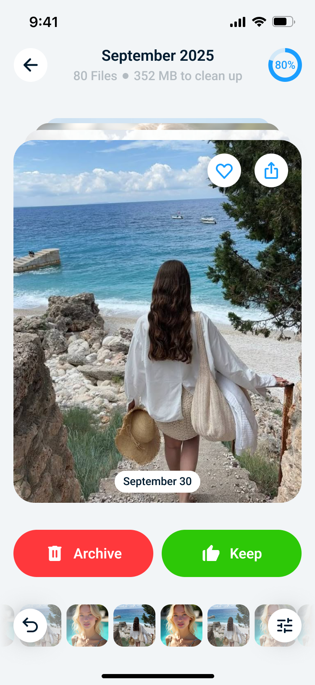
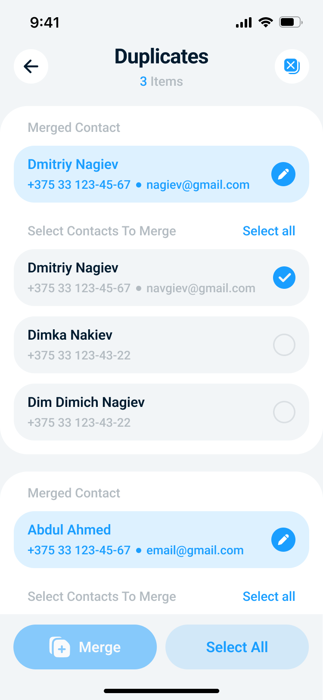
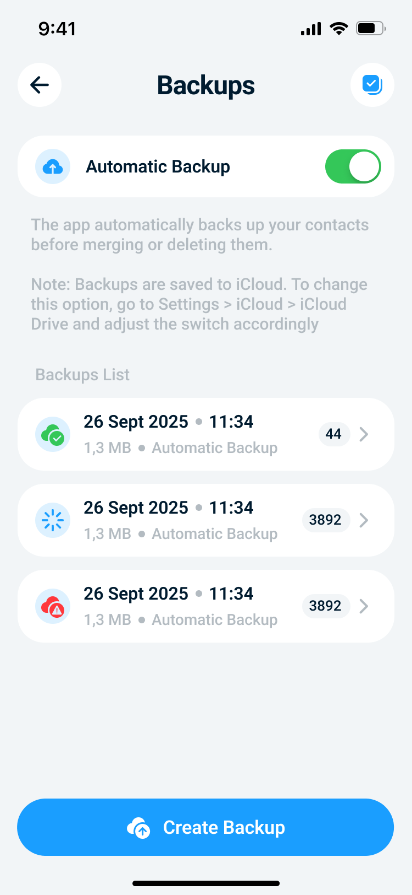

Duplicates, blur, screenshots, videos
Fast Clean highlights the biggest reclaimable wins before you commit to deleting anything.
Cleaner Kit AI for iPhone
Cleaner Kit AI combines smart photo cleanup, swipe sorting, a local secret vault, contact repair, and backups inside a polished iOS interface built around fast decisions.
Fast Clean highlights the biggest reclaimable wins before you commit to deleting anything.
Secret Library keeps sensitive items inside the app with passcode and optional Face ID protection.
Merge duplicate contacts, restore from backups, and clean up incomplete entries with less risk.
Feature map
This page is based on the project's real iOS screens, localized English copy, design tokens, and current privacy behavior instead of generic marketing filler.
Fast Clean surfaces duplicates, similar photos, blurred shots, screenshots, videos, and other heavy files with a storage ring and one-tap entry points.
The interface stays consistent across cleanup flows, so it is easy to jump from the storage dashboard into duplicates, screenshots, or swipe sorting without relearning the layout.
The swipe flow helps you organize media quickly: archive what you do not need, keep favorites, undo the last step, and track progress visually.
Store photos, videos, documents, and contacts in private app storage with optional Face ID and separate entry points for each content type.
Cleaner Kit AI can surface incomplete contacts, merge duplicates into a cleaner card, and create backups before risky edits so you can roll back when needed.
Automatic backup flows help you restore contacts after merges or deletions instead of hoping nothing went wrong.
Storage cleanup
The home cleanup screen mirrors the app's strongest visual pattern: a bright blue gradient header, a circular storage graph, and highly tappable cards that break cleanup work into understandable categories.

Swipe sorting
Instead of dumping hundreds of items into one intimidating grid, Cleaner Kit AI also offers a swipe-based review mode that turns gallery cleanup into a focused, chronological flow.

Secret Library
Secret Library is the app's private vault experience. The current build exposes dedicated spaces for photos, videos, documents, and contacts, all wrapped in the same rounded card style used across the rest of the app.
Contacts repair
The contacts area is more than a plain list. It combines dashboard entry points, duplicate merge review, incomplete-contact discovery, and a backup system that makes destructive actions less stressful.


Privacy at a glance
The website and privacy page now align with the current app build: media cleanup happens locally, Secret Library content stays in private app storage, and the legal page explicitly calls out Firebase Analytics and Crashlytics.
The current codebase performs core duplicate, similar-photo, screenshot, and contacts analysis on the device.
Secret photos, videos, documents, and contacts are stored on the device and can be gated by passcode and Face ID.
Firebase Analytics and Crashlytics are documented in the updated policy instead of being buried behind vague legal language.
If you revoke a permission in iOS Settings, the related feature stops working until you grant it again.
FAQ
These answers are based on the current project, screenshots, localized strings, and the updated privacy policy bundled with this website folder.
Core cleanup and contact organization flows are local-first in the current codebase. The privacy policy still documents external services such as Firebase Analytics, Crashlytics, and iCloud backups where they apply.
The current build covers duplicate and similar photos, blurry shots, screenshots, videos, swipe-based archive review, private files in Secret Library, duplicate contacts, incomplete contacts, and backup-aware cleanup flows.
Secret Library can be protected with a passcode and optional Face ID. The current implementation stores imported private content locally inside the app's private storage.
The app's deletion flow reminds users that deleted media remains in the iPhone's Recently Deleted album for 30 days, so recovery can still happen there before permanent removal.
The current privacy policy reflects iCloud-backed contact backups, with local on-device fallback behavior when iCloud is unavailable. That makes the contacts feature safer for merge and delete operations.
Yes. The current app integrates Firebase Analytics and Firebase Crashlytics to measure usage and stability. The updated privacy page explains the relevant categories and limits.
Support
For support questions, bug reports, privacy requests, and product feedback, you can contact the Cleaner Kit AI support address directly by email. This standalone site includes the main product overview, support contact, and Privacy Policy in one place.
Use this address for help with the app, bug reports, account questions, or general support requests.
Send email Legal Privacy PolicyRead the full data-processing breakdown for media, contacts, analytics, and storage.
Open pageThe website uses a copied app icon, local Roboto font assets, and the selected App Store screenshots so the Pages version does not depend on project-relative runtime resources.
Cleaner Kit AI is published by JDG HRYSHYN ALIAKSEI. Use the support email for customer support, privacy questions, and product-related communication.